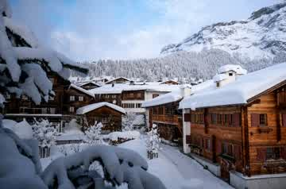
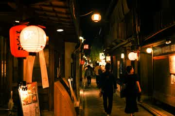
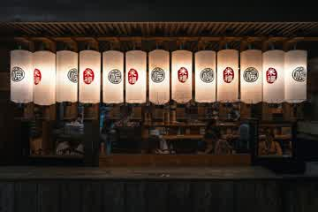

自在浏览刚刚
做了一个小插件：鼠标停在网页的图片上，大图就出来了，作者和正文就在旁边。17 秒看懂。
开源 · 免费 · 浏览器插件
刷到好图，不用点开。大图直接铺开，作者和正文就在旁边。看完随手一点，接着刷。
Chrome、Edge、Arc 都能用
你也试试：鼠标停在图上
为什么要装

鼠标停在图上，大图就铺开。不用先点一下，再等它弹出来。
滚轮、触控板、← → 键都能翻。不用关掉，再去点下一张。
谁发的、说了什么，跟图一起看。不用关掉大图，回去找正文。
看完随手一点，接着刷。
更大
屏幕被地址栏、侧边栏和广告占了大半，图只剩一小块。鼠标停一下，图就放大到大半个屏幕。


数字按上面这个示例窗口算。
原图
网页上放的，大多是压缩过的小图。自在浏览会找来原图，放大了也清楚。
左右拖动中间的线，对比一下。
图文
在微博、即刻、X 和 Instagram 上，谁发的、写了什么、转发里说了什么，都在图旁边。一组十几张图，也能一张张翻完。
上周末去了海边的小镇，早上六点爬到山顶，整个镇子还没醒。房子沿着海岸一路排过去，像谁随手撒的一把彩色糖果。
视频
放大播放，带声音。实况照片和动图，鼠标停上去就会动。
做了一个小插件：鼠标停在网页的图片上，大图就出来了，作者和正文就在旁边。17 秒看懂。
点一下视频
小细节
打开时，左上角会亮出一个红色的 ×，然后缩成小红点，不挡着图。鼠标靠过去，它就变回 ×。其实点一下图片，或者旁边的空白处，也能关。
图标和浏览器自带的按钮一样，是灰色细线条。放在工具栏上，和旁边的按钮像是一套。
网站
其他网站，点工具栏上的图标，打开开关，允许访问就行。
以上名称归各自的所有者。自在浏览是独立的开源项目，和这些网站没有关联。
安装
1.1.0 已在 Chrome 应用商店上架。
Chrome、Edge、Arc 都能用，版本 123 以上。